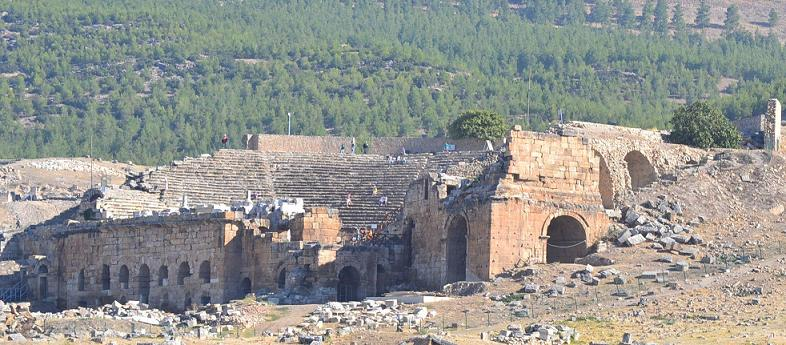
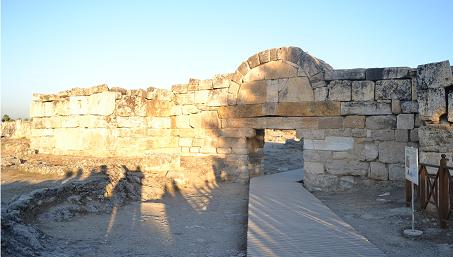
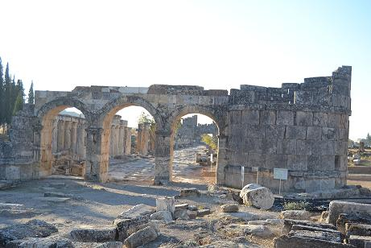
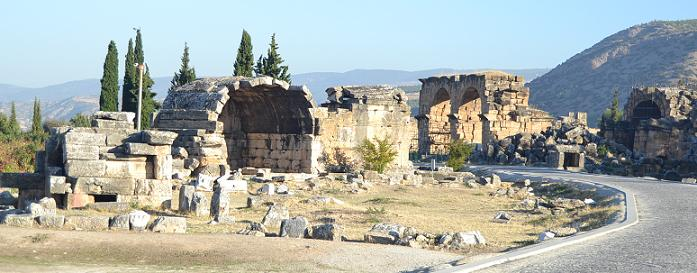
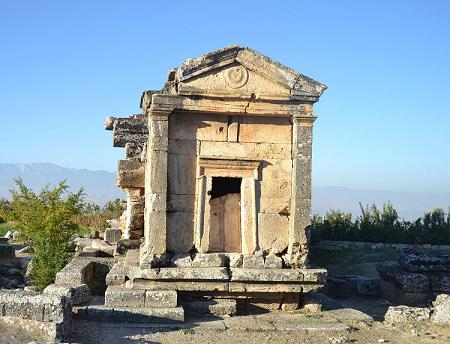
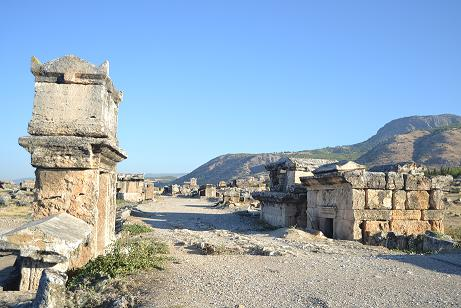
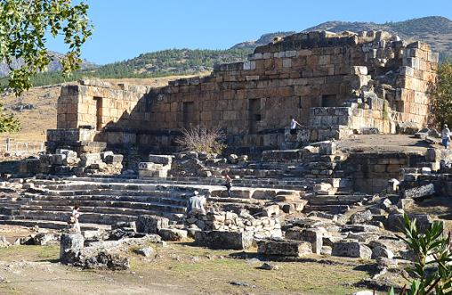
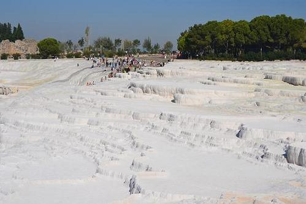

|
H I E R Á P O L I S
Antigua ciudad Helena que se localiza en la actual Pamukkale
(Castillo de algodón).
La ciudad fue
fundada por Eumenes II, rey de Pérgamo, a finales del siglo II a.e.c.
Su nombre proviene de Hiera, la esposa de Telefos, fundador de la
ciudad de Pérgamo.
Fue heredada por los romanos junto con las tierras del Reino de
Pérgamo en el año 133 a.e.c, de acuerdo con el testamento de Atalo
III.
Hierápolis era un centro de culto a la diosa Cibeles, con un gran
complejo de aguas termales.
Sufrío un importante terremoto durante el reinado de Tiberio en el
año 17 y en el 60 en época de Nerón. En ambos casos la ciudad fue
reconstruida.
Posteriormente en los siglos II y III se remodeló en profundidad
bajo el mandato de los emperadores Septimio Severo y Caracala.
La ciudad era activo centro de comercio gracias a la lana teñida y
sus aguas.
En el siglo IV se inicio su declive con la caída del comercio entre
Bizancio y Roma.
Posiblemente los numerosos terremotos fueron el motivo por el que
fue abandonada.

De sus
monumentos destacan las Necrópolis, se han hallado más de 1.200
enterramientos en forma de sarcófagos, túmulos y tumbas. Es la mayor
necrópolis de Asia Menor. También destaca el Teatro, la Acrópolis,
las Termas, el Templo de Apolo, …
Aquí se ha hallado la llamada "puerta al infierno" es la "Puerta de
Plutón". La cueva fue considerada como el portal al inframundo en la
mitología y en la tradición greco-romana, debido a sus densos y
mortíferos vapores.
También es un lugar fundamental para el cristianismo, aquí fue
asesinado el apóstol Felipe.
No olvidar sus paredes de Cáliza.
| |
|
|
Puertas de
la Ciudad
 |
 |
| |
|
Complejo
Termal
 |
|
 |
 |
|
|
Templo-Ninfeo
 |
| |
|
Paredes de
caliza
 |
| |
| |
|